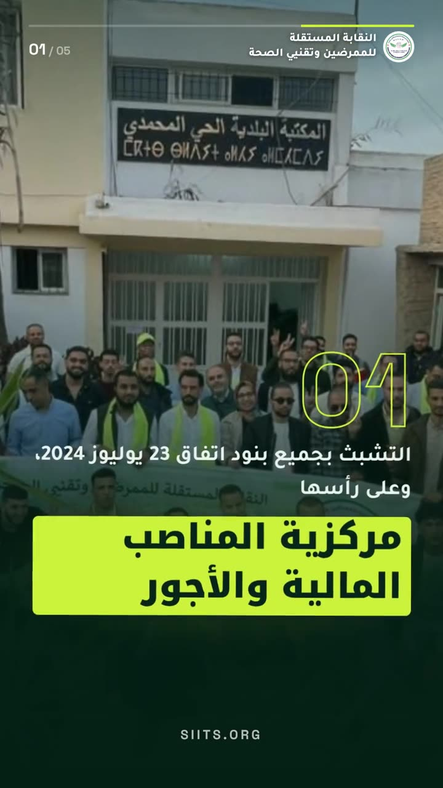

بلاغ المجلس الوطني: التشبث باتفاق 23 يوليوز ومركزية المناصب المالية والأجور والاستعداد لمعركة نضالية

في محطة تنظيمية ونضالية هامة، انعقدت الدورة السابعة للمجلس الوطني للنقابة المستقلة للممرضين وتقنيي الصحة منذ التأسيس، والأولى بعد المؤتمر الوطني الثاني، يوم 07 نونبر 2026 بالدار البيضاء، تحت شعار: «الهوية التمريضية: فكر، بناء ونضال»، بحضور أزيد من 100 عضو يمثلون مختلف المكاتب الجهوية والإقليمية والجامعية.
محطة لتقييم المرحلة، وتوحيد الرؤى، وتعزيز التعبئة التنظيمية والنضالية، بما يخدم الدفاع عن الحقوق والمكتسبات للممرضين وتقنيي الصحة، والنهوض بالقضية التمريضية، وترسيخ هوية مهنية واضحة ومنصفة.
واستهل المجلس أشغاله بتهنئة الشعب المغربي بعيدي الوحدة والمسيرة الخضراء، والتنويه بما تحققه بلادنا من تقدم في قضية الصحراء المغربية. ثم ناقش تعديلات النظام الداخلي، وتحيين الملف المطلبي، وتقييم المرحلة الحالية، حيث عبّر المتدخلون عن استيائهم من التراجعات التي تمس المكتسبات وتنصل الوزارة من الاتفاقات السابقة، خاصة اتفاق 23 يوليوز 2024.
وبعد نقاش جاد ومستفيض، أجمع المجلس الوطني على:
• تشبث النقابة بجميع بنود اتفاق 23 يوليوز 2024، وعلى رأسها الحفاظ على مركزية المناصب المالية والأجور، والتعجيل بتنزيل مقتضياته كاملة. • الانفتاح على الهيئات السياسية والإعلامية والجمعوية للتعريف بالقضية التمريضية. • الاستعداد التام لخوض معركة نضالية بلا هوادة من أجل الترافع على هوية تمريضية واضحة. • جعل جولات الحوار وسيلة لا غاية، نظراً لتنصل الوزارة من تنزيل اتفاقاتها. • تفويض تدبير المرحلة المقبلة للمكتب الوطني، مع الرجوع إلى الهياكل لحسم القرارات النهائية والكبرى.
وختم أعضاء المجلس الوطني بالتعبير عن استعدادهم التام للتعاون والعمل على إنجاح هذه المرحلة والمضي قدماً بالقضية التمريضية.
عاشت النقابة المستقلة للممرضين وتقنيي الصحة حرة، أبية ومناضلة. ✌🏻✌🏻
فتح في تطبيق النقابة